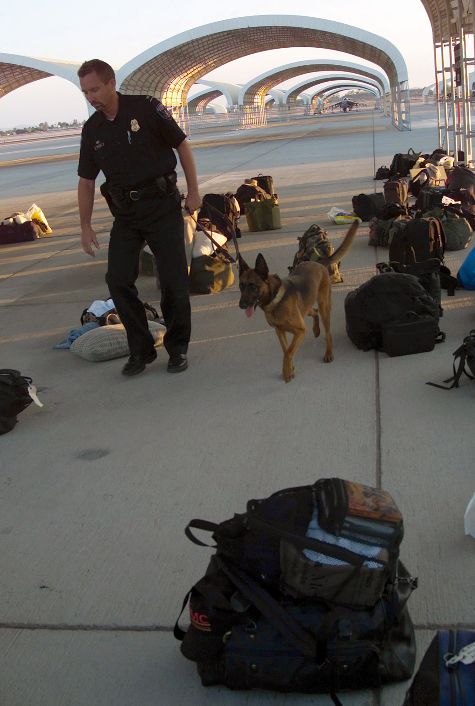
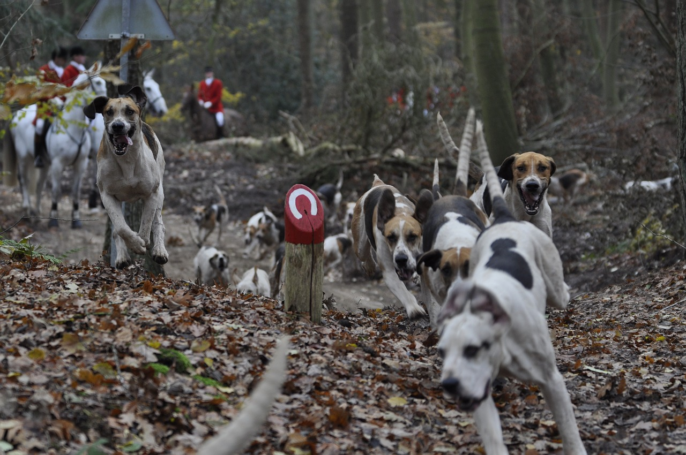
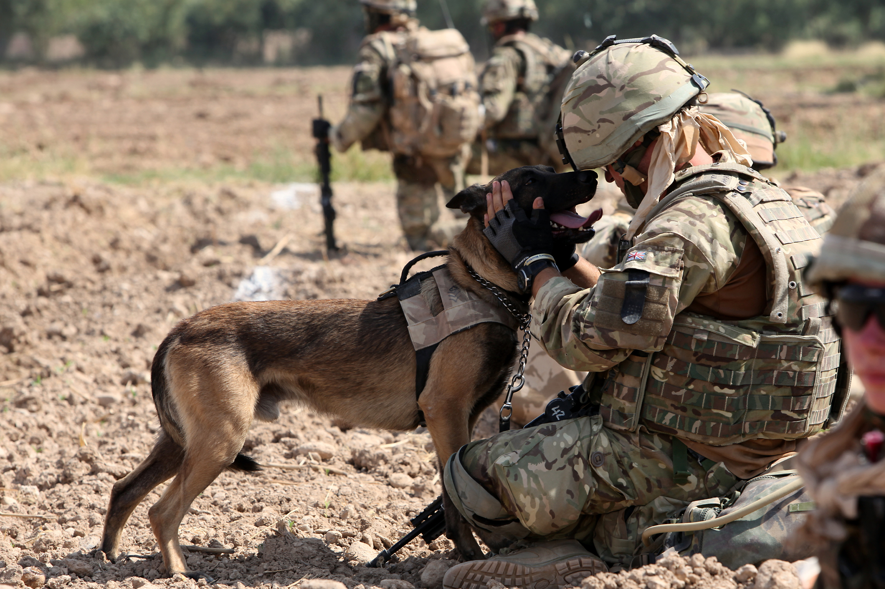

Dogs are very useful for humans. Thanks to the relation with them, their incredible intelligence and smell. In some cases, they are used to replace a human work.
Dogs helps people who need it in their life. These people can be blind, or disabled people.
Service dog
Service dogs (or also seeing-eye dogs) have a very powerful friendship with the owner. They participate in a long training in order to be attentive to the environment.
Seeing-eye dog
In the street, he warns about the presence of steps, pedestrian crossing, etc.
They are very obedient. They can also memorize daily routes, disobey to protect their master, recognize some shops of infrastructures like bus stops, etc.
Over the utility, they are also a very good emotionnal support.
Assistance dog
Assistance dogs are not very different. They can do more actions, to meet the needs of the disabled.
They can turn on/off the light, open a door or the fridge, pick-up and give objects, bark to warn and stay calm in any cases.
Dogs are not only intelligent. They also have a powerful smell that can be used by customs, DEA, Search and Rescue and M.D. for diseases detection.
Customs and DEA
Customs and DEA use dogs with their sense of smell to detect drugs. That is a very good help for them because they can smell a lot of luggages at once and detect it. No X-Ray or opening is necessary. Some criminal tried to trick the dog's nose, by concealing the smeel with other smells like piment, coffee, etc. Unfortunately, it doesn't work.
 A dog control of luggages on the tarmacIn comparison with us, for a hamburger, we smell hamburger. The dogs' nose works differently. Dogs smell bread, tomato, salad, meet, cheese and ketchup. They can separate every elements.
Customs also used them to detect explosive material, gun powder and money.
Search and Rescue
The rescue teams in mountains and on the beach uses dogs to detect lost people. In mountains, people stuck under snow after an avalanche is very hard to find. Fortunatly, the dog can found them only with the nose. That is very impressive. If founded, the dog will start to dig and get the human out of the snow.
In the sea, dogs are not well used but they can swim and help drowning persons to reach the beach.
Medical
Recently in medicine, scientists discovered that dogs can detect a dozen of diseases like melanoma, cancer and most recently, COVID-19. Actually they detect a difference of body odor due to desease. They are trained to detect this pretty slight difference.
Everyone knows that dogs can also be dangerous or agressive. Some people are scared of them. They can be used as a weapon or only as dissuasive weapon.
Hunt
Hunters like dogs because they are small, fast and like to chase prey. That is a perfect teammate during a hunt.
 Hunters riding horses while dogs are chasing a preySecurity
Security dogs are used to be dissuasive. They are selected and trained for their size, muscles and their obedience.
Military
A lot of countries uses dogs in their army for different roles. They are used to protect an area and make sure nobody will try to entry. They bark if someone is hidden. Another type of dogs is similar but used for their discretion.
 A soldier with his military dogMessenger dogs are trained to deliver a package to the receiver. They are very discreet to be sure package is not intercepted.
Mine dogs are trained to sniff the ground and prevent mine placed by ennemies.